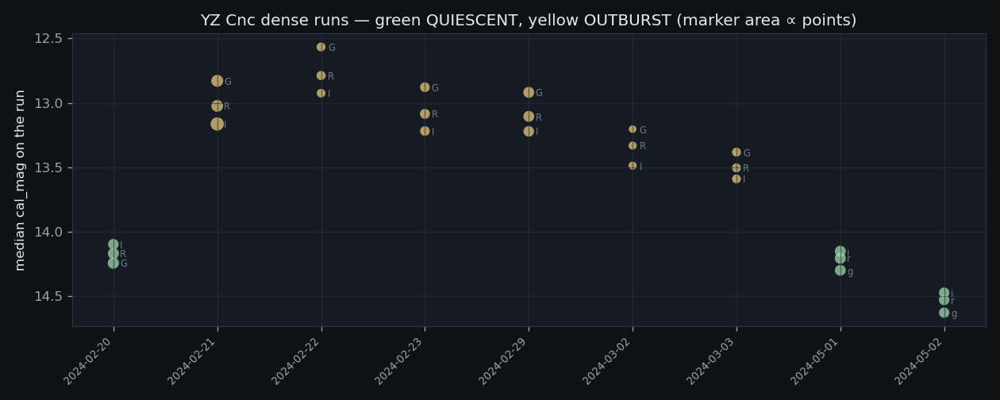
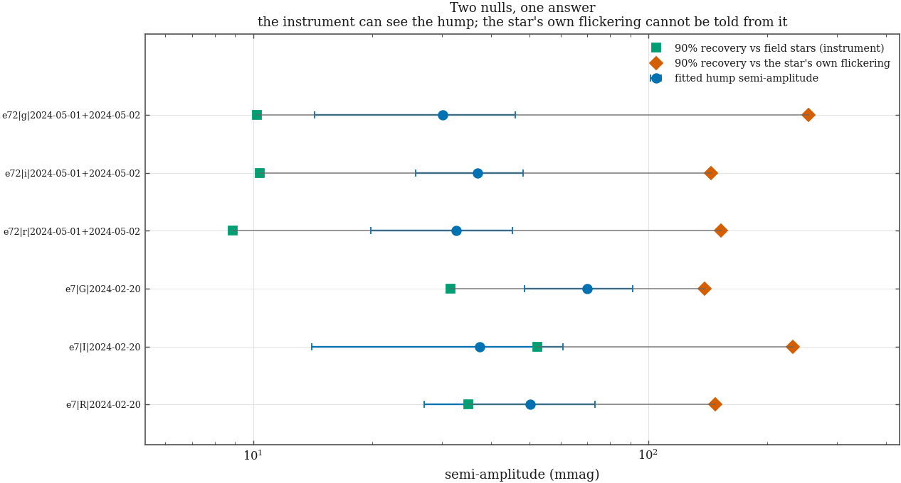
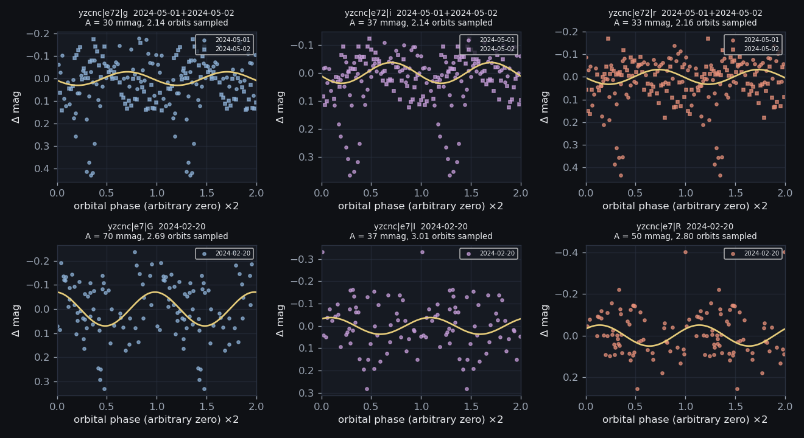
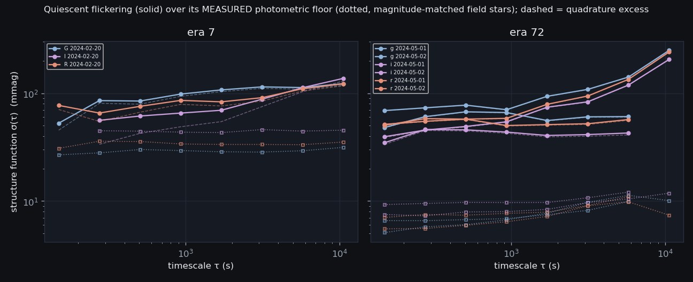
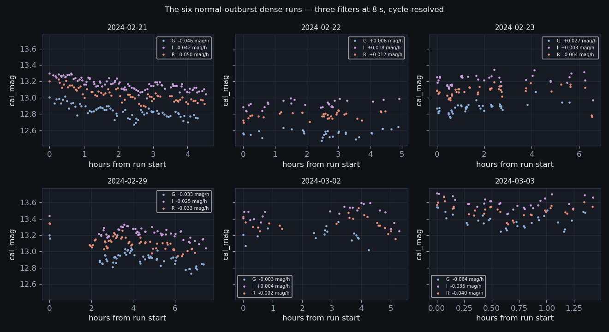
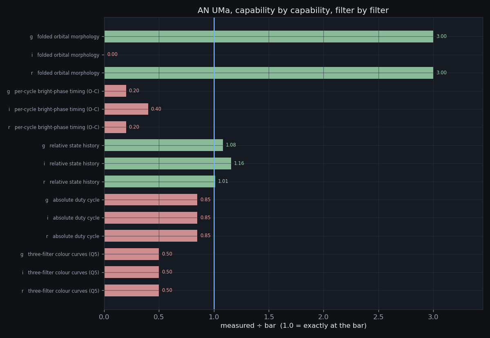

YZ Cnc on the fallback branch: the quiescent orbital hump against
two nulls · flickering over a floor that was measured, not modelled
· the §4.19 signal-to-noise gate, executed · the six
normal-outburst runs as their own result · what the season cannot
do, quantified · AN UMa graded filter by filter
· 30 scopes, 138 flickering detections
· built 2026-08-20T12:02Z
(CV-S10 v1.0 (2026-08-20, closing science decisions),
commit 8301a80-dirty)
· the external record that
chose the branch ·
the Phase-3 analysis ·
the characterization ·
project hub ·
the front page
Two tasks were left open when Phase 3 finished, and both are decisions rather than discoveries. CV-P3-yzcnc-superhump had already had its branch chosen for it by the external record: CV-S7 measured that no dense run of the 2024 YZ Cnc season sits inside a superoutburst, so the superhump branch is closed and the strategy's own fallback — orbital hump plus flickering statistics, “honest but weaker” — is what the season supports. CV-P4-anuma asks what role AN UMa should have in the paper, filter by filter, after CV-S5 graded its three-filter colour goal NOT SUPPORTED.
cv_ext_verdict — CV-S7's night-by-night
classification, which uses INDEPENDENT AAVSO photometry wherever it exists
and survives deleting every RLMT row from the comparison. This page does not
re-decide which nights were dense or which were in outburst.p3_ephemeris, i.e. the AAVSO VSX record. Nothing here measures
a period; §4 of the analysis page already showed that the
±1 c/d aliases carry up to 0.96 of the window power on YZ Cnc's
multi-night sets, so no period from this archive could select its own
family member.cv_series, never the photon
prediction alone.Three measurements and two decisions: the folded hump with a detection test that has TWO nulls; flickering amplitude against timescale over a floor that is measured rather than modelled; the six normal-outburst runs characterised on their own terms; the §4.19 signal-to-noise gate executed; and AN UMa graded capability by capability against bars that are stated one number at a time so a reader can disagree with any of them in one line.
Everything below depends on one classification: which of the dense runs caught YZ Cnc at quiescence and which caught it in outburst. Get that wrong and a flickering amplitude measured in outburst is published as a quiescent one.
3 quiescent dense runs and 6 in normal outburst, inherited from
CV-S7 and re-tabulated here with this stage's own coverage numbers. Note the
two night conventions: cv_frames keys on the LOCAL night and
CV-S7's page tabulates by UTC night, one day later for these Arizona
evenings. Both are printed so the two pages can be checked against each
other.
| local night | UTC night | state | filter | N | span (h) | orbits sampled | cadence (s) | median cal_mag | p5–p95 (mag) |
|---|---|---|---|---|---|---|---|---|---|
| 2024-02-20 | 2024-02-21 | QUIESCENT | G | 62 | 5.61 | 2.69 | 203 | 14.24 | 0.420 |
| 2024-02-20 | 2024-02-21 | QUIESCENT | I | 51 | 6.28 | 3.01 | 220 | 14.10 | 0.332 |
| 2024-02-20 | 2024-02-21 | QUIESCENT | R | 58 | 5.84 | 2.80 | 205 | 14.17 | 0.267 |
| 2024-02-21 | 2024-02-22 | OUTBURST | G | 71 | 4.29 | 2.06 | 193 | 12.83 | 0.258 |
| 2024-02-21 | 2024-02-22 | OUTBURST | I | 92 | 4.53 | 2.17 | 191 | 13.16 | 0.216 |
| 2024-02-21 | 2024-02-22 | OUTBURST | R | 68 | 4.49 | 2.16 | 193 | 13.02 | 0.253 |
| 2024-02-22 | 2024-02-23 | OUTBURST | G | 30 | 4.88 | 2.34 | 377 | 12.57 | 0.129 |
| 2024-02-22 | 2024-02-23 | OUTBURST | I | 28 | 4.92 | 2.36 | 307 | 12.92 | 0.146 |
| 2024-02-22 | 2024-02-23 | OUTBURST | R | 33 | 4.48 | 2.15 | 215 | 12.79 | 0.123 |
| 2024-02-23 | 2024-02-24 | OUTBURST | G | 40 | 5.59 | 2.69 | 195 | 12.88 | 0.150 |
| 2024-02-23 | 2024-02-24 | OUTBURST | I | 39 | 6.58 | 3.16 | 240 | 13.22 | 0.203 |
| 2024-02-23 | 2024-02-24 | OUTBURST | R | 43 | 6.54 | 3.14 | 194 | 13.09 | 0.192 |
| 2024-02-29 | 2024-03-01 | OUTBURST | G | 56 | 7.37 | 3.54 | 213 | 12.92 | 0.249 |
| 2024-02-29 | 2024-03-01 | OUTBURST | I | 51 | 7.48 | 3.59 | 317 | 13.22 | 0.201 |
| 2024-02-29 | 2024-03-01 | OUTBURST | R | 55 | 6.96 | 3.34 | 153 | 13.10 | 0.261 |
| 2024-03-02 | 2024-03-03 | OUTBURST | G | 17 | 4.25 | 2.04 | 311 | 13.20 | 0.264 |
| 2024-03-02 | 2024-03-03 | OUTBURST | I | 22 | 5.29 | 2.54 | 584 | 13.49 | 0.313 |
| 2024-03-02 | 2024-03-03 | OUTBURST | R | 22 | 5.16 | 2.48 | 594 | 13.33 | 0.253 |
| 2024-03-03 | 2024-03-04 | OUTBURST | G | 31 | 1.35 | 0.65 | 165 | 13.38 | 0.282 |
| 2024-03-03 | 2024-03-04 | OUTBURST | I | 30 | 1.42 | 0.68 | 165 | 13.59 | 0.216 |
| 2024-03-03 | 2024-03-04 | OUTBURST | R | 31 | 1.42 | 0.68 | 163 | 13.50 | 0.257 |
| 2024-05-01 | 2024-05-02 | QUIESCENT | g | 55 | 2.52 | 1.21 | 144 | 14.30 | 0.521 |
| 2024-05-01 | 2024-05-02 | QUIESCENT | i | 57 | 2.52 | 1.21 | 144 | 14.15 | 0.401 |
| 2024-05-01 | 2024-05-02 | QUIESCENT | r | 58 | 2.52 | 1.21 | 144 | 14.20 | 0.445 |
| 2024-05-02 | 2024-05-03 | QUIESCENT | g | 49 | 1.94 | 0.93 | 141 | 14.63 | 0.277 |
| 2024-05-02 | 2024-05-03 | QUIESCENT | i | 50 | 1.94 | 0.93 | 141 | 14.47 | 0.201 |
| 2024-05-02 | 2024-05-03 | QUIESCENT | r | 51 | 1.97 | 0.95 | 141 | 14.53 | 0.231 |

The quiescent runs are the fallback's data set. The outburst runs are §6's, and are not mixed into any quiescent statistic on this page.
The strategy refused to promise the quiescent fallback until somebody checked it: “8 s High Gain at quiescent V≈14.5 may be sky/read-noise dominated; verify before promising the fallback” (§4.19, concern m4). That sentence is not a measurement, so it is turned into three arithmetic lines here.
The key move is to stop using formal error bars. What decides whether a frame is noise-dominated is the scatter a REAL star of the target's brightness shows through those same frames — and YZ Cnc's four held-out check stars sit about a magnitude brighter than the star at quiescence, so they are the wrong stars to ask. The floor used throughout this page is the structure function of every field star within 0.25 mag of the target on that run.
Measured floors, by era: era 7: 27–46 mmag; era 72: 5–12 mmag. That gap is exactly the §4.19 worry made numerical — the 8 s High Gain frames are several times noisier at quiescence than the 30 s Sloan-era frames.
| gate | scope | what is compared | value | bar | verdict | the numbers behind it |
|---|---|---|---|---|---|---|
4.19-flicker | e72|g|2024-05-01 | timescale bins with variability above the floor | 8.00 | 1.00 | PASS | 8 of 8 measurable bins clear 3 sigma on the variance excess |
4.19-flicker | e72|g|2024-05-02 | timescale bins with variability above the floor | 7.00 | 1.00 | PASS | 7 of 7 measurable bins clear 3 sigma on the variance excess |
4.19-flicker | e72|i|2024-05-01 | timescale bins with variability above the floor | 8.00 | 1.00 | PASS | 8 of 8 measurable bins clear 3 sigma on the variance excess |
4.19-flicker | e72|i|2024-05-02 | timescale bins with variability above the floor | 7.00 | 1.00 | PASS | 7 of 7 measurable bins clear 3 sigma on the variance excess |
4.19-flicker | e72|r|2024-05-01 | timescale bins with variability above the floor | 8.00 | 1.00 | PASS | 8 of 8 measurable bins clear 3 sigma on the variance excess |
4.19-flicker | e72|r|2024-05-02 | timescale bins with variability above the floor | 7.00 | 1.00 | PASS | 7 of 7 measurable bins clear 3 sigma on the variance excess |
4.19-flicker | e7|G|2024-02-20 | timescale bins with variability above the floor | 7.00 | 1.00 | PASS | 7 of 8 measurable bins clear 3 sigma on the variance excess |
4.19-flicker | e7|I|2024-02-20 | timescale bins with variability above the floor | 4.00 | 1.00 | PASS | 4 of 7 measurable bins clear 3 sigma on the variance excess |
4.19-flicker | e7|R|2024-02-20 | timescale bins with variability above the floor | 6.00 | 1.00 | PASS | 6 of 8 measurable bins clear 3 sigma on the variance excess |
4.19-floor | e72|g|2024-05-01 | target variability / measured photometric floor, at the shortest lag sampled | 13.55 | 2.00 | PASS | at tau = 150 s the target's structure function is 69 mmag and the magnitude-matched field stars' is 5 mmag (20 stars, exposure 30 s) |
4.19-floor | e72|g|2024-05-02 | target variability / measured photometric floor, at the shortest lag sampled | 7.31 | 2.00 | PASS | at tau = 150 s the target's structure function is 48 mmag and the magnitude-matched field stars' is 7 mmag (16 stars, exposure 30 s) |
4.19-floor | e72|i|2024-05-01 | target variability / measured photometric floor, at the shortest lag sampled | 5.27 | 2.00 | PASS | at tau = 150 s the target's structure function is 40 mmag and the magnitude-matched field stars' is 8 mmag (19 stars, exposure 30 s) |
4.19-floor | e72|i|2024-05-02 | target variability / measured photometric floor, at the shortest lag sampled | 3.75 | 2.00 | PASS | at tau = 150 s the target's structure function is 35 mmag and the magnitude-matched field stars' is 9 mmag (24 stars, exposure 30 s) |
4.19-floor | e72|r|2024-05-01 | target variability / measured photometric floor, at the shortest lag sampled | 9.13 | 2.00 | PASS | at tau = 150 s the target's structure function is 50 mmag and the magnitude-matched field stars' is 6 mmag (17 stars, exposure 30 s) |
4.19-floor | e72|r|2024-05-02 | target variability / measured photometric floor, at the shortest lag sampled | 7.31 | 2.00 | PASS | at tau = 150 s the target's structure function is 52 mmag and the magnitude-matched field stars' is 7 mmag (21 stars, exposure 30 s) |
4.19-floor | e7|G|2024-02-20 | target variability / measured photometric floor, at the shortest lag sampled | 1.97 | 2.00 | FAIL | at tau = 150 s the target's structure function is 53 mmag and the magnitude-matched field stars' is 27 mmag (33 stars, exposure 8 s) |
4.19-floor | e7|I|2024-02-20 | target variability / measured photometric floor, at the shortest lag sampled | 1.25 | 2.00 | FAIL | at tau = 275 s the target's structure function is 56 mmag and the magnitude-matched field stars' is 45 mmag (40 stars, exposure 8 s) |
4.19-floor | e7|R|2024-02-20 | target variability / measured photometric floor, at the shortest lag sampled | 2.50 | 2.00 | PASS | at tau = 150 s the target's structure function is 77 mmag and the magnitude-matched field stars' is 31 mmag (33 stars, exposure 8 s) |
4.19-hump | e72|g|2024-05-01 | fitted hump semi-amplitude / instrumental 90% recovery contour | 3.33 | 1.00 | PASS | hump 90 mmag against an instrumental contour of 27 mmag; the contour set by the star's OWN flickering is not measurable on this scope, which samples fewer than 1.5 orbits and is reported in p4_run, not here |
4.19-hump | e72|g|2024-05-02 | fitted hump semi-amplitude / instrumental 90% recovery contour | 6.08 | 1.00 | PASS | hump 88 mmag against an instrumental contour of 15 mmag; the contour set by the star's OWN flickering is not measurable on this scope, which samples fewer than 1.5 orbits and is reported in p4_run, not here |
4.19-hump | e72|i|2024-05-01 | fitted hump semi-amplitude / instrumental 90% recovery contour | 2.76 | 1.00 | PASS | hump 71 mmag against an instrumental contour of 26 mmag; the contour set by the star's OWN flickering is not measurable on this scope, which samples fewer than 1.5 orbits and is reported in p4_run, not here |
4.19-hump | e72|i|2024-05-02 | fitted hump semi-amplitude / instrumental 90% recovery contour | 3.81 | 1.00 | PASS | hump 66 mmag against an instrumental contour of 17 mmag; the contour set by the star's OWN flickering is not measurable on this scope, which samples fewer than 1.5 orbits and is reported in p4_run, not here |
4.19-hump | e72|r|2024-05-01 | fitted hump semi-amplitude / instrumental 90% recovery contour | 3.67 | 1.00 | PASS | hump 80 mmag against an instrumental contour of 22 mmag; the contour set by the star's OWN flickering is not measurable on this scope, which samples fewer than 1.5 orbits and is reported in p4_run, not here |
4.19-hump | e72|r|2024-05-02 | fitted hump semi-amplitude / instrumental 90% recovery contour | 4.16 | 1.00 | PASS | hump 70 mmag against an instrumental contour of 17 mmag; the contour set by the star's OWN flickering is not measurable on this scope, which samples fewer than 1.5 orbits and is reported in p4_run, not here |
4.19-hump | e7|G|2024-02-20 | fitted hump semi-amplitude / instrumental 90% recovery contour | 2.22 | 1.00 | PASS | hump 70 mmag against an instrumental contour of 32 mmag; the contour set by the star's OWN flickering is 139 mmag and is reported in p4_run, not here |
4.19-hump | e7|I|2024-02-20 | fitted hump semi-amplitude / instrumental 90% recovery contour | 0.71 | 1.00 | FAIL | hump 37 mmag against an instrumental contour of 52 mmag; the contour set by the star's OWN flickering is 232 mmag and is reported in p4_run, not here |
4.19-hump | e7|R|2024-02-20 | fitted hump semi-amplitude / instrumental 90% recovery contour | 1.44 | 1.00 | PASS | hump 50 mmag against an instrumental contour of 35 mmag; the contour set by the star's OWN flickering is 148 mmag and is reported in p4_run, not here |
The gate passes, 24 of 27 lines, and it passes with a restriction rather than uniformly. Flickering clears the measured floor on every quiescent run in every filter. Every line that fails does so on the same run — the 8 s High Gain night, which is exactly the one §4.19 named:
4.19-floor on e7|G|2024-02-20 — at tau = 150 s the target's structure function is 53 mmag and the magnitude-matched field stars' is 27 mmag (33 stars, exposure 8 s)4.19-floor on e7|I|2024-02-20 — at tau = 275 s the target's structure function is 56 mmag and the magnitude-matched field stars' is 45 mmag (40 stars, exposure 8 s)4.19-hump on e7|I|2024-02-20 — hump 37 mmag against an instrumental contour of 52 mmag; the contour set by the star's OWN flickering is 232 mmag and is reported in p4_run, not hereSo §4.19 was right about the frames and wrong about the conclusion. The fallback is deliverable; the short-timescale end of the High Gain era is not where to deliver it, and the 30 s Sloan-era runs carry the flickering result. Note what this gate does NOT license: it says the photometry can see a modulation the size of the fitted hump, not that the hump is real. That question needs a second null and is §3's.
A dwarf nova at quiescence should show an orbital hump — the bright spot where the accretion stream meets the disc rim, seen once per orbit. Is one there, and how big? The question that decides the answer is not “is the fitted amplitude bigger than its error bar?” but “bigger than what could have produced it by accident?”, and there are two candidate accidents.
Each scope is folded on the published period and fitted with 2 harmonics plus one free constant per night, jointly — the discipline CV-S9 measured the case for, because detrending first and searching afterwards eats part of the signal it is looking for. Blocks fold two nights together only where the accumulated phase drift stays inside 0.1 cycles; the February and May quiescent runs are 71 days apart, which on a period quoted to four decimals is about half a cycle of drift, so those may never share a phase axis.
| scope | N | orbits | A (mmag) | σA | 2nd harm. | phase of max light | χ2ν | A90 field | A90 self | call |
|---|---|---|---|---|---|---|---|---|---|---|
| e72 g 2024-05-01 | 55 | 1.21 | 90 | 20 | 36 | 0.773 | 400.3 | 27 | — | AMPLITUDE ONLY |
| e72 g 2024-05-02 | 49 | 0.93 | 88 | 13 | 30 | 0.366 | 103.1 | 15 | — | AMPLITUDE ONLY |
| e72 g 2024-05-01+2024-05-02 | 104 | 2.14 | 30 | 16 | 21 | 0.706 | 387.5 | 10 | 254 | NOT DETECTED |
| e72 i 2024-05-01 | 57 | 1.21 | 71 | 15 | 22 | 0.784 | 104.4 | 26 | — | AMPLITUDE ONLY |
| e72 i 2024-05-02 | 50 | 0.93 | 66 | 9 | 14 | 0.450 | 20.8 | 17 | — | AMPLITUDE ONLY |
| e72 i 2024-05-01+2024-05-02 | 107 | 2.14 | 37 | 11 | 15 | 0.703 | 89.8 | 10 | 144 | NOT DETECTED |
| e72 r 2024-05-01 | 58 | 1.21 | 80 | 16 | 30 | 0.790 | 187.6 | 22 | — | AMPLITUDE ONLY |
| e72 r 2024-05-02 | 51 | 0.95 | 70 | 11 | 5 | 0.379 | 44.2 | 17 | — | AMPLITUDE ONLY |
| e72 r 2024-05-01+2024-05-02 | 109 | 2.16 | 33 | 13 | 20 | 0.732 | 170.5 | 9 | 153 | NOT DETECTED |
| e7 G 2024-02-20 | 62 | 2.69 | 70 | 21 | 16 | 0.984 | 4.8 | 32 | 139 | NOT DETECTED |
| e7 I 2024-02-20 | 51 | 3.01 | 37 | 23 | 30 | 0.091 | 3.4 | 52 | 232 | NOT DETECTED |
| e7 R 2024-02-20 | 58 | 2.80 | 50 | 23 | 34 | 0.141 | 2.2 | 35 | 148 | NOT DETECTED |
Scope notes.
e72 g 2024-05-01 — this scope samples only 1.21 orbits, below the 1.5 at which a sinusoid at P_orb stops being degenerate with a trend; the amplitude is reported, the detection is not claimede72 g 2024-05-02 — this scope samples only 0.93 orbits, below the 1.5 at which a sinusoid at P_orb stops being degenerate with a trend; the amplitude is reported, the detection is not claimede72 g 2024-05-01+2024-05-02 — 2 runs folded together: accumulated phase drift 0.0066 cycles, inside the 0.1 bar; one free constant per night fitted jointly with the harmonicse72 i 2024-05-01 — this scope samples only 1.21 orbits, below the 1.5 at which a sinusoid at P_orb stops being degenerate with a trend; the amplitude is reported, the detection is not claimede72 i 2024-05-02 — this scope samples only 0.93 orbits, below the 1.5 at which a sinusoid at P_orb stops being degenerate with a trend; the amplitude is reported, the detection is not claimede72 i 2024-05-01+2024-05-02 — 2 runs folded together: accumulated phase drift 0.0066 cycles, inside the 0.1 bar; one free constant per night fitted jointly with the harmonicse72 r 2024-05-01 — this scope samples only 1.21 orbits, below the 1.5 at which a sinusoid at P_orb stops being degenerate with a trend; the amplitude is reported, the detection is not claimede72 r 2024-05-02 — this scope samples only 0.95 orbits, below the 1.5 at which a sinusoid at P_orb stops being degenerate with a trend; the amplitude is reported, the detection is not claimede72 r 2024-05-01+2024-05-02 — 2 runs folded together: accumulated phase drift 0.0066 cycles, inside the 0.1 bar; one free constant per night fitted jointly with the harmonicsTwo nulls are measured for every scope, and BOTH are injections of a known sinusoid into real noise at the real timestamps, recovered at the published frequency, with the 90% recovery amplitude read off the same amplitude grid CV-S5 used:


Each night's three filters are fitted independently, so they are three measurements of one physical feature and must agree in phase. An orbital feature must agree between nights as well. Phases are compared on the circle, where the largest possible disagreement is half a cycle.
| night | era | filters | mean phase of maximum light | spread across filters (cycles) |
|---|---|---|---|---|
| 2024-02-20 | 7 | 3 | 0.073 | 0.066 |
| 2024-05-01 | 72 | 3 | 0.782 | 0.007 |
| 2024-05-02 | 72 | 3 | 0.398 | 0.037 |
Within a night the filters agree to a few hundredths of a cycle. So the modulation being fitted is REAL — three independent measurements land on the same feature — and it is the star rather than the photometry.
Between nights, comparing only pairs that share an era and are close enough in time that the period's own uncertainty cannot explain the difference: 2024-05-01 vs 2024-05-02: 0.384 cycles. That is close to the half-cycle maximum, against an accumulated phase drift of well under 0.01 cycles over the one-day gap. A modulation that is coherent across three filters within one night and lands a third of a cycle away the next night is not the orbit; it is flickering with a coherence time shorter than the gap between runs, which is exactly what §4 measures directly.
The February run cannot be compared with the May runs at all: 71 days on a period published to four decimals is about half a cycle of accumulated drift, so any phase difference between them is unconstrained before the star is even considered.
NOT DETECTED — PUBLISHED AS AN UPPER LIMIT — 0 of 6 testable quiescent scopes clear both the 90% recovery contour and the 1% false-alarm threshold. The folded fundamental has semi-amplitude 30-70 mmag; the INSTRUMENTAL contour is 9-52 mmag and the fitted hump exceeds it on 5 of the 6 testable scopes; on the remaining I run of 2024-02-21 it does not, so that scope is uninformative rather than a non-detection; but the contour set by the star's OWN flickering is 139-254 mmag, so the data cannot tell a coherent hump from the flickering.
Two nulls, and they disagree, which is the whole result. Against magnitude-matched field stars the fitted amplitude is comfortably significant. Against this star's own residuals -- rolled night by night, so every realization is made of light the telescope actually recorded -- it is not. YZ Cnc flickers at about ten times the photometric floor on exactly the timescales an orbital hump occupies, so the field-star contour alone would have produced a confident detection of nothing in particular.
The publishable statement is an upper limit: any COHERENT orbital modulation with semi-amplitude above about 139 mmag would have been recovered in nine injections out of ten, and none is. Phase zero is arbitrary in any case -- VSX publishes no epoch for YZ Cnc -- so only hump SHAPES and within-night inter-filter phase offsets were ever available.
Flickering is aperiodic, so a periodogram is the wrong instrument. The right one is a structure function: for every pair of points separated by τ, accumulate (Δm)2, and report √(⟨Δm2⟩/2) — which for a stationary process is the standard deviation of the variability on that timescale.
The hard part is not the statistic, it is the subtraction. A structure function of the target contains flickering AND photon noise AND sky AND whatever the ensemble zero point did that night. Subtract too little and the photometry is published as astrophysics; subtract too much and a real detection is erased.
The floor is the identical statistic computed on the magnitude-matched field stars — every star within 0.25 mag of the target's median on that run, covering at least 50% of its frames, measured through the same frames. Those stars carry the same photon statistics, the same sky, the same ensemble zero-point wander and the same atmosphere, and no flickering. The per-bin floor is the MEDIAN over stars, not the mean, so one variable star that slipped into the sample cannot erase a detection; fewer than 5 stars and the bin reports no floor at all rather than a guess.
The subtraction is done in VARIANCE — σflicker = √(σtotal2 − σfloor2) — because that is the quantity that is additive, and its significance is quoted as a sigma on the variance difference rather than as a ratio of two similar sigmas. The orbital model of §3 is removed from the target before the statistic is computed, so a coherent hump cannot be counted as flickering.
For comparison, the formal per-point error inflated by each series' measured χ2 inflation — the number a pipeline would have used if nobody had measured a floor — is: yzcnc|e72|g 5 mmag, yzcnc|e72|g 6 mmag, yzcnc|e72|i 8 mmag, yzcnc|e72|i 10 mmag, yzcnc|e72|r 6 mmag, yzcnc|e72|r 8 mmag, yzcnc|e7|G 52 mmag, yzcnc|e7|I 62 mmag, yzcnc|e7|R 76 mmag. Where it disagrees with the measured floor, the measured floor governs.

| series | night | τ (s) | pairs | σtarget | floor (mmag) | floor stars | flickering (mmag) | excess σ | detected |
|---|---|---|---|---|---|---|---|---|---|
| yzcnc|e72|g | 2024-05-01 | 81 | 0 | — | — | 20 | — | — | no |
| yzcnc|e72|g | 2024-05-01 | 150 | 49 | 69 | 5 | 20 | 69 | 4.9 | yes |
| yzcnc|e72|g | 2024-05-01 | 275 | 48 | 73 | 6 | 20 | 73 | 4.9 | yes |
| yzcnc|e72|g | 2024-05-01 | 506 | 90 | 78 | 6 | 20 | 77 | 5.2 | yes |
| yzcnc|e72|g | 2024-05-01 | 930 | 169 | 70 | 7 | 20 | 70 | 5.2 | yes |
| yzcnc|e72|g | 2024-05-01 | 1,709 | 301 | 94 | 8 | 20 | 93 | 5.2 | yes |
| yzcnc|e72|g | 2024-05-01 | 3,142 | 409 | 109 | 10 | 20 | 108 | 5.2 | yes |
| yzcnc|e72|g | 2024-05-01 | 5,776 | 384 | 141 | 11 | 20 | 141 | 5.2 | yes |
| yzcnc|e72|g | 2024-05-01 | 10,620 | 35 | 250 | 10 | 20 | 250 | 4.2 | yes |
| yzcnc|e72|g | 2024-05-02 | 81 | 0 | — | — | 16 | — | — | no |
| yzcnc|e72|g | 2024-05-02 | 150 | 46 | 48 | 7 | 16 | 48 | 4.7 | yes |
| yzcnc|e72|g | 2024-05-02 | 275 | 45 | 61 | 7 | 16 | 60 | 4.7 | yes |
| yzcnc|e72|g | 2024-05-02 | 506 | 96 | 67 | 7 | 16 | 67 | 4.9 | yes |
| yzcnc|e72|g | 2024-05-02 | 930 | 167 | 66 | 7 | 16 | 66 | 4.9 | yes |
| yzcnc|e72|g | 2024-05-02 | 1,709 | 278 | 56 | 7 | 16 | 55 | 4.9 | yes |
| yzcnc|e72|g | 2024-05-02 | 3,142 | 352 | 60 | 8 | 16 | 60 | 4.9 | yes |
| yzcnc|e72|g | 2024-05-02 | 5,776 | 192 | 61 | 10 | 16 | 60 | 4.8 | yes |
| yzcnc|e72|g | 2024-05-02 | 10,620 | 0 | — | — | 16 | — | — | no |
| yzcnc|e72|i | 2024-05-01 | 81 | 0 | — | — | 19 | — | — | no |
| yzcnc|e72|i | 2024-05-01 | 150 | 50 | 40 | 8 | 19 | 39 | 4.8 | yes |
| yzcnc|e72|i | 2024-05-01 | 275 | 49 | 46 | 7 | 19 | 45 | 4.8 | yes |
| yzcnc|e72|i | 2024-05-01 | 506 | 99 | 49 | 8 | 19 | 49 | 5.2 | yes |
| yzcnc|e72|i | 2024-05-01 | 930 | 186 | 54 | 8 | 19 | 54 | 5.2 | yes |
| yzcnc|e72|i | 2024-05-01 | 1,709 | 326 | 74 | 8 | 19 | 74 | 5.3 | yes |
| yzcnc|e72|i | 2024-05-01 | 3,142 | 435 | 83 | 10 | 19 | 83 | 5.3 | yes |
| yzcnc|e72|i | 2024-05-01 | 5,776 | 419 | 119 | 10 | 19 | 119 | 5.3 | yes |
| yzcnc|e72|i | 2024-05-01 | 10,620 | 32 | 206 | 12 | 19 | 206 | 4.0 | yes |
| yzcnc|e72|i | 2024-05-02 | 81 | 0 | — | — | 24 | — | — | no |
| yzcnc|e72|i | 2024-05-02 | 150 | 48 | 35 | 9 | 24 | 34 | 4.5 | yes |
| yzcnc|e72|i | 2024-05-02 | 275 | 47 | 46 | 10 | 24 | 45 | 4.6 | yes |
| yzcnc|e72|i | 2024-05-02 | 506 | 100 | 46 | 10 | 24 | 45 | 4.8 | yes |
| yzcnc|e72|i | 2024-05-02 | 930 | 171 | 44 | 10 | 24 | 43 | 4.8 | yes |
| yzcnc|e72|i | 2024-05-02 | 1,709 | 284 | 41 | 10 | 24 | 39 | 4.7 | yes |
| yzcnc|e72|i | 2024-05-02 | 3,142 | 365 | 41 | 11 | 24 | 40 | 4.7 | yes |
| yzcnc|e72|i | 2024-05-02 | 5,776 | 210 | 43 | 12 | 24 | 41 | 4.6 | yes |
| yzcnc|e72|i | 2024-05-02 | 10,620 | 0 | — | — | 24 | — | — | no |
| yzcnc|e72|r | 2024-05-01 | 81 | 0 | — | — | 17 | — | — | no |
| yzcnc|e72|r | 2024-05-01 | 150 | 53 | 50 | 6 | 17 | 50 | 5.1 | yes |
| yzcnc|e72|r | 2024-05-01 | 275 | 51 | 58 | 6 | 17 | 58 | 5.0 | yes |
| yzcnc|e72|r | 2024-05-01 | 506 | 102 | 58 | 6 | 17 | 57 | 5.3 | yes |
| yzcnc|e72|r | 2024-05-01 | 930 | 189 | 59 | 6 | 17 | 58 | 5.3 | yes |
| yzcnc|e72|r | 2024-05-01 | 1,709 | 339 | 79 | 7 | 17 | 79 | 5.3 | yes |
| yzcnc|e72|r | 2024-05-01 | 3,142 | 460 | 94 | 9 | 17 | 94 | 5.3 | yes |
| yzcnc|e72|r | 2024-05-01 | 5,776 | 422 | 135 | 10 | 17 | 134 | 5.4 | yes |
| yzcnc|e72|r | 2024-05-01 | 10,620 | 37 | 242 | 7 | 17 | 242 | 4.3 | yes |
| yzcnc|e72|r | 2024-05-02 | 81 | 0 | — | — | 21 | — | — | no |
| yzcnc|e72|r | 2024-05-02 | 150 | 49 | 52 | 7 | 21 | 51 | 4.9 | yes |
| yzcnc|e72|r | 2024-05-02 | 275 | 48 | 55 | 8 | 21 | 54 | 4.8 | yes |
| yzcnc|e72|r | 2024-05-02 | 506 | 102 | 58 | 7 | 21 | 57 | 5.0 | yes |
| yzcnc|e72|r | 2024-05-02 | 930 | 175 | 50 | 8 | 21 | 50 | 4.9 | yes |
| yzcnc|e72|r | 2024-05-02 | 1,709 | 293 | 51 | 8 | 21 | 51 | 4.9 | yes |
| yzcnc|e72|r | 2024-05-02 | 3,142 | 377 | 52 | 9 | 21 | 51 | 4.9 | yes |
| yzcnc|e72|r | 2024-05-02 | 5,776 | 231 | 57 | 11 | 21 | 56 | 4.9 | yes |
| yzcnc|e72|r | 2024-05-02 | 10,620 | 0 | — | — | 21 | — | — | no |
| yzcnc|e7|G | 2024-02-20 | 81 | 4 | — | — | 33 | — | — | no |
| yzcnc|e7|G | 2024-02-20 | 150 | 20 | 53 | 27 | 33 | 45 | 2.3 | no |
| yzcnc|e7|G | 2024-02-20 | 275 | 35 | 86 | 28 | 33 | 81 | 3.7 | yes |
| yzcnc|e7|G | 2024-02-20 | 506 | 84 | 85 | 30 | 33 | 79 | 4.9 | yes |
| yzcnc|e7|G | 2024-02-20 | 930 | 120 | 98 | 29 | 33 | 94 | 5.1 | yes |
| yzcnc|e7|G | 2024-02-20 | 1,709 | 193 | 108 | 29 | 33 | 104 | 5.2 | yes |
| yzcnc|e7|G | 2024-02-20 | 3,142 | 274 | 115 | 28 | 33 | 111 | 5.2 | yes |
| yzcnc|e7|G | 2024-02-20 | 5,776 | 607 | 113 | 29 | 33 | 109 | 5.2 | yes |
| yzcnc|e7|G | 2024-02-20 | 10,620 | 474 | 123 | 32 | 33 | 119 | 5.2 | yes |
| yzcnc|e7|I | 2024-02-20 | 81 | 2 | — | — | 40 | — | — | no |
| yzcnc|e7|I | 2024-02-20 | 150 | 16 | — | — | 40 | — | — | no |
| yzcnc|e7|I | 2024-02-20 | 275 | 24 | 56 | 45 | 40 | 34 | 1.2 | no |
| yzcnc|e7|I | 2024-02-20 | 506 | 49 | 62 | 45 | 40 | 42 | 2.3 | no |
| yzcnc|e7|I | 2024-02-20 | 930 | 60 | 66 | 44 | 40 | 49 | 2.8 | no |
| yzcnc|e7|I | 2024-02-20 | 1,709 | 119 | 70 | 43 | 40 | 55 | 3.1 | yes |
| yzcnc|e7|I | 2024-02-20 | 3,142 | 213 | 88 | 46 | 40 | 75 | 3.7 | yes |
| yzcnc|e7|I | 2024-02-20 | 5,776 | 282 | 113 | 45 | 40 | 104 | 4.3 | yes |
| yzcnc|e7|I | 2024-02-20 | 10,620 | 381 | 138 | 45 | 40 | 130 | 4.5 | yes |
| yzcnc|e7|R | 2024-02-20 | 81 | 3 | — | — | 33 | — | — | no |
| yzcnc|e7|R | 2024-02-20 | 150 | 21 | 77 | 31 | 33 | 71 | 2.7 | no |
| yzcnc|e7|R | 2024-02-20 | 275 | 28 | 66 | 36 | 33 | 55 | 2.6 | no |
| yzcnc|e7|R | 2024-02-20 | 506 | 61 | 76 | 36 | 33 | 67 | 4.2 | yes |
| yzcnc|e7|R | 2024-02-20 | 930 | 100 | 86 | 34 | 33 | 79 | 4.5 | yes |
| yzcnc|e7|R | 2024-02-20 | 1,709 | 162 | 83 | 34 | 33 | 76 | 4.5 | yes |
| yzcnc|e7|R | 2024-02-20 | 3,142 | 267 | 91 | 34 | 33 | 85 | 4.7 | yes |
| yzcnc|e7|R | 2024-02-20 | 5,776 | 415 | 110 | 33 | 33 | 105 | 4.9 | yes |
| yzcnc|e7|R | 2024-02-20 | 10,620 | 465 | 123 | 35 | 33 | 117 | 4.9 | yes |
MEASURED — 62 of 68 measurable timescale bins on the quiescent runs exceed the measured field-star floor by 3 sigma or more on the variance excess. Flickering amplitude 34-250 mmag over 150-10620 s; the floor subtracted is 5-46 mmag.
The floor is not modelled and not a formal error bar. It is the SAME structure function computed on field stars within 0.25 mag of the target through the same frames, so it carries identical photon noise, sky, ensemble zero-point wander and atmosphere, and no flickering. YZ Cnc's four held-out check stars sit about a magnitude BRIGHTER than the star at quiescence and would have given an optimistic floor.
The subtraction is done in variance, and bins where the target does not exceed the floor are reported as NOT MEASURED rather than as a small amplitude. The two eras differ by design: the 30 s Sloan-era frames reach a 5-12 mmag floor, the 8 s High Gain frames only 27-46 mmag, which is precisely what §4.19 feared.
The strategy's Q3 promised a superhump period and a dPsh/dt. Neither appears in this paper. An absence in a manuscript is worth nothing unless it is quantified, so: how big would a superhump have had to be for these data to have measured its period?
Two independent reasons, either sufficient on its own.
First, the state. Common superhumps occur inside superoutbursts. CV-S7 established that none of the dense runs does — the brightest reaches 1.86 mag above quiescence against the ~3 mag a superoutburst reaches, and the February block is bracketed by independent AAVSO points five days apart, which a ≥ 8 d superoutburst plateau cannot fit between.
Second, the sampling. A superhump period is a BLIND period determination: Psh is not known in advance the way Porb is. Scored that way — the tallest peak in the 2–40 c/d band must both clear threshold and land within 1% of the truth — the 90% recovery contour on the outburst dense runs is:
| night | filter | N | blind-search A90 (mmag) | range | a superhump would need |
|---|---|---|---|---|---|
| 2024-02-21 | I | 92 | 130 | 111–140 | ≥ 50 |
| 2024-02-22 | R | 33 | 100 | 94–122 | ≥ 50 |
| 2024-02-23 | R | 43 | 82 | 69–92 | ≥ 50 |
| 2024-02-29 | G | 56 | 127 | 116–134 | ≥ 50 |
| 2024-03-02 | I | 22 | 237 | 219–248 | ≥ 50 |
NO — AND THAT IS A MEASUREMENT, NOT AN ABSENCE — the blind-search 90% recovery contour on the outburst dense runs is 82-237 mmag on the 5 of 18 run-filters long enough to carry one, against superhump semi-amplitudes of 50 mmag and up; and CV-S7 already established that none of the 6 outburst dense runs sits inside a superoutburst (brightest 1.86 mag above quiescence, against the ~3 mag a superoutburst reaches).
A superhump period is a BLIND period determination -- P_sh is not known in advance the way P_orb is -- and a single night spanning about two orbits cannot place a periodogram maximum inside a 1% frequency window at any amplitude these data reach. Two independent reasons, either sufficient on its own.
No superhump period, no dP_sh/dt, no O-C of superhump maxima, and no such promise in the abstract. Figure 11 of the strategy's figure list becomes the orbital-hump and flickering panel, which is the alternative the strategy itself names.
CV-S7 called these “a distinct, separately publishable data set, not a consolation”. That is a claim, and it needs numbers: what does a dense multi-colour run inside a normal outburst actually measure?
Amplitude relative to the measured quiescent baseline, covered duration, and a straight-line rate through the run with its own error bar. A rate is called a direction only when it exceeds three times that bar; otherwise the run is FLAT and says so.
| local night | UTC | filter | N | span (h) | median cal_mag | mag above quiescence | p5–p95 | rate (mag/h) | verdict |
|---|---|---|---|---|---|---|---|---|---|
| 2024-02-21 | 2024-02-22 | G | 71 | 4.29 | 12.83 | 1.63 | 0.258 | -0.0465 ± 0.0050 | BRIGHTENING |
| 2024-02-21 | 2024-02-22 | I | 92 | 4.53 | 13.16 | 1.63 | 0.216 | -0.0418 ± 0.0035 | BRIGHTENING |
| 2024-02-21 | 2024-02-22 | R | 68 | 4.49 | 13.02 | 1.63 | 0.253 | -0.0496 ± 0.0044 | BRIGHTENING |
| 2024-02-22 | 2024-02-23 | G | 30 | 4.88 | 12.57 | 1.86 | 0.129 | 0.0059 ± 0.0057 | FLAT (within 3 sigma) |
| 2024-02-22 | 2024-02-23 | I | 28 | 4.92 | 12.92 | 1.86 | 0.146 | 0.0179 ± 0.0055 | FADING |
| 2024-02-22 | 2024-02-23 | R | 33 | 4.48 | 12.79 | 1.86 | 0.123 | 0.0120 ± 0.0051 | FLAT (within 3 sigma) |
| 2024-02-23 | 2024-02-24 | G | 40 | 5.59 | 12.88 | 1.59 | 0.150 | 0.0274 ± 0.0052 | FADING |
| 2024-02-23 | 2024-02-24 | I | 39 | 6.58 | 13.22 | 1.59 | 0.203 | 0.0035 ± 0.0056 | FLAT (within 3 sigma) |
| 2024-02-23 | 2024-02-24 | R | 43 | 6.54 | 13.09 | 1.59 | 0.192 | -0.0041 ± 0.0067 | FLAT (within 3 sigma) |
| 2024-02-29 | 2024-03-01 | G | 56 | 7.37 | 12.92 | 1.15 | 0.249 | -0.0326 ± 0.0055 | BRIGHTENING |
| 2024-02-29 | 2024-03-01 | I | 51 | 7.48 | 13.22 | 1.15 | 0.201 | -0.0251 ± 0.0046 | BRIGHTENING |
| 2024-02-29 | 2024-03-01 | R | 55 | 6.96 | 13.10 | 1.15 | 0.261 | -0.0335 ± 0.0051 | BRIGHTENING |
| 2024-03-02 | 2024-03-03 | G | 17 | 4.25 | 13.20 | 1.15 | 0.264 | -0.0027 ± 0.0154 | FLAT (within 3 sigma) |
| 2024-03-02 | 2024-03-03 | I | 22 | 5.29 | 13.49 | 1.15 | 0.313 | 0.0036 ± 0.0109 | FLAT (within 3 sigma) |
| 2024-03-02 | 2024-03-03 | R | 22 | 5.16 | 13.33 | 1.15 | 0.253 | -0.0017 ± 0.0105 | FLAT (within 3 sigma) |
| 2024-03-03 | 2024-03-04 | G | 31 | 1.35 | 13.38 | 1.22 | 0.282 | -0.0638 ± 0.0382 | FLAT (within 3 sigma) |
| 2024-03-03 | 2024-03-04 | I | 30 | 1.42 | 13.59 | 1.22 | 0.216 | -0.0349 ± 0.0324 | FLAT (within 3 sigma) |
| 2024-03-03 | 2024-03-04 | R | 31 | 1.42 | 13.50 | 1.22 | 0.257 | -0.0399 ± 0.0345 | FLAT (within 3 sigma) |

A SEPARATE RESULT, NOT A CONSOLATION — 6 dense runs inside normal outbursts, three filters at 8 s exposures, peaking 1.86 mag above quiescence; 8 of 18 run-filters show a rate significant at 3 sigma, from -0.050 mag/h on the rise to +0.027 mag/h on the decline.
Cycle-resolved three-colour coverage of normal-outburst structure is sampling the sparse survey record cannot provide. The 2024-02-21 run catches a rise in all three filters at once, and the following nights catch the top and the decline.
Reported as amplitude, covered duration and rate of change per run. No outburst recurrence time and no disc-instability model fit: nine dense nights of one season cannot support either.
CV-S5's Q5 already graded AN UMa's three-filter colour goal NOT SUPPORTED: 2025-03-03,2025-03-04,2025-04-10,2025-12-21 — four nights carrying a full orbit in all three filters, against the strategy's own bar of 8. That settles one goal. It does not settle the question the plan actually asks, which is what EACH FILTER can support on its own, and therefore whether AN UMa belongs in the paper as a full target, a reduced-scope target, or not at all.
One measured number against one stated bar, per capability. Every contestable choice is a choice of bar, and a bar can be disagreed with in one line; a weighted score cannot. The bars, and why each is where it is:
A night counts as a full-orbit night in a filter when it holds at least
12 target points spanning more
than one orbital period — the same rule CV-S5's census used, restated
so this page's counts are reproducible without opening that one. They
reproduce ch_cadence.n_blocks_ge1cycle exactly.
| filter | capability | measured | bar | unit | verdict | the deciding number |
|---|---|---|---|---|---|---|
| g | folded orbital morphology | 9.00 | 3.00 | nights | SUPPORTED | 9 usable full-orbit nights in g (9 nights whose SAMPLING covers an orbit by the Section 2.2 census -- >= 12 points spanning more than one 0.079753 d orbit -- of which usable counts only those where the modulation is also detected in this filter, which is why the two counts differ); CV-S9 modulation detected = 1, PDM theta 0.385, LS power at the published frequency 0.346, fitted semi-amplitude 223 mmag |
| i | folded orbital morphology | 0.00 | 3.00 | nights | NOT SUPPORTED | 0 usable full-orbit nights in i (6 nights whose SAMPLING covers an orbit by the Section 2.2 census -- >= 12 points spanning more than one 0.079753 d orbit -- of which usable counts only those where the modulation is also detected in this filter, which is why the two counts differ); CV-S9 modulation detected = 0, PDM theta 0.410, LS power at the published frequency 0.048, fitted semi-amplitude 57 mmag |
| r | folded orbital morphology | 9.00 | 3.00 | nights | SUPPORTED | 9 usable full-orbit nights in r (9 nights whose SAMPLING covers an orbit by the Section 2.2 census -- >= 12 points spanning more than one 0.079753 d orbit -- of which usable counts only those where the modulation is also detected in this filter, which is why the two counts differ); CV-S9 modulation detected = 1, PDM theta 0.398, LS power at the published frequency 0.199, fitted semi-amplitude 140 mmag |
| g | bright-phase timing (O-C) | 1.00 | 5.00 | accepted edges | NOT SUPPORTED | 1 of 10 fitted edges accepted in g. Across the target, 16 of 20 rejections are step signal-to-noise below 5 (measured 0.8-4.8), 3 are grid-edge epochs and 1 is a cadence gap: the edge is not distinguishable from AN UMa's own flickering on most cycles. Per-NIGHT epochs are unavailable for a second, independent reason: the accepted edges scatter over 0.152 in orbital phase against the 0.05 one-feature bar, so CV-S9's cycle-count verdict is NOT ONE FEATURE — NO O-C |
| i | bright-phase timing (O-C) | 2.00 | 5.00 | accepted edges | NOT SUPPORTED | 2 of 4 fitted edges accepted in i. Across the target, 16 of 20 rejections are step signal-to-noise below 5 (measured 0.8-4.8), 3 are grid-edge epochs and 1 is a cadence gap: the edge is not distinguishable from AN UMa's own flickering on most cycles. Per-NIGHT epochs are unavailable for a second, independent reason: the accepted edges scatter over 0.152 in orbital phase against the 0.05 one-feature bar, so CV-S9's cycle-count verdict is NOT ONE FEATURE — NO O-C |
| r | bright-phase timing (O-C) | 1.00 | 5.00 | accepted edges | NOT SUPPORTED | 1 of 10 fitted edges accepted in r. Across the target, 16 of 20 rejections are step signal-to-noise below 5 (measured 0.8-4.8), 3 are grid-edge epochs and 1 is a cadence gap: the edge is not distinguishable from AN UMa's own flickering on most cycles. Per-NIGHT epochs are unavailable for a second, independent reason: the accepted edges scatter over 0.152 in orbital phase against the 0.05 one-feature bar, so CV-S9's cycle-count verdict is NOT ONE FEATURE — NO O-C |
| g | bright-phase timing (one feature) | 0.15 | 0.05 | cycles of phase scatter | NOT SUPPORTED | The 4 accepted edges of this target, pooled across all three filters, scatter over 0.152 in orbital phase (circular s.d.) against the 0.05 bar, so CV-S9's cycle-count verdict is NOT ONE FEATURE — NO O-C. This is the SECOND and independent reason no per-night epoch is constructible: even were there enough accepted edges, they do not time the same feature and pooling them would produce a scatter that reads as a period error and is not one |
| i | bright-phase timing (one feature) | 0.15 | 0.05 | cycles of phase scatter | NOT SUPPORTED | The 4 accepted edges of this target, pooled across all three filters, scatter over 0.152 in orbital phase (circular s.d.) against the 0.05 bar, so CV-S9's cycle-count verdict is NOT ONE FEATURE — NO O-C. This is the SECOND and independent reason no per-night epoch is constructible: even were there enough accepted edges, they do not time the same feature and pooling them would produce a scatter that reads as a period error and is not one |
| r | bright-phase timing (one feature) | 0.15 | 0.05 | cycles of phase scatter | NOT SUPPORTED | The 4 accepted edges of this target, pooled across all three filters, scatter over 0.152 in orbital phase (circular s.d.) against the 0.05 bar, so CV-S9's cycle-count verdict is NOT ONE FEATURE — NO O-C. This is the SECOND and independent reason no per-night epoch is constructible: even were there enough accepted edges, they do not time the same feature and pooling them would produce a scatter that reads as a period error and is not one |
| g | relative state history | 0.81 | 0.75 | Otsu separability | SUPPORTED | Otsu separability 0.81 on 8 ungated nights, threshold 16.64 mag, span 0.54 mag; CV-S9 verdict BIMODAL — TWO STATES RESOLVED |
| i | relative state history | 0.87 | 0.75 | Otsu separability | SUPPORTED | Otsu separability 0.87 on 8 ungated nights, threshold 16.76 mag, span 0.25 mag; CV-S9 verdict BIMODAL — TWO STATES RESOLVED |
| r | relative state history | 0.76 | 0.75 | Otsu separability | SUPPORTED | Otsu separability 0.76 on 8 ungated nights, threshold 16.64 mag, span 0.63 mag; CV-S9 verdict BIMODAL — TWO STATES RESOLVED |
| g | absolute duty cycle | 17.68 | 15.00 | percentage points | NOT SUPPORTED | 8 independent nights give a binomial half-width of +/-18 percentage points on a 50% duty cycle (duty measured 50%) |
| i | absolute duty cycle | 17.68 | 15.00 | percentage points | NOT SUPPORTED | 8 independent nights give a binomial half-width of +/-18 percentage points on a 50% duty cycle (duty measured 75%) |
| r | absolute duty cycle | 17.68 | 15.00 | percentage points | NOT SUPPORTED | 8 independent nights give a binomial half-width of +/-18 percentage points on a 50% duty cycle (duty measured 50%) |
| g | three-filter colour curves (Q5) | 4.00 | 8.00 | nights | NOT SUPPORTED | 4 nights carry a full orbit in ALL THREE filters (2025-03-03, 2025-03-04, 2025-04-10, 2025-12-21) against the strategy's own bar of 8 |
| i | three-filter colour curves (Q5) | 4.00 | 8.00 | nights | NOT SUPPORTED | 4 nights carry a full orbit in ALL THREE filters (2025-03-03, 2025-03-04, 2025-04-10, 2025-12-21) against the strategy's own bar of 8 |
| r | three-filter colour curves (Q5) | 4.00 | 8.00 | nights | NOT SUPPORTED | 4 nights carry a full orbit in ALL THREE filters (2025-03-03, 2025-03-04, 2025-04-10, 2025-12-21) against the strategy's own bar of 8 |

REDUCED-SCOPE TARGET — 5 of 18 graded capabilities are SUPPORTED across the three filters. Per filter: g — folded orbital morphology; relative state history | i — relative state history | r — folded orbital morphology; relative state history
AN UMa is neither a colour target nor a timing target, and the two failures have different causes. The colour goal fails on SCHEDULING: 4 nights carry a full orbit in all three filters against a bar of 8. The timing goal fails on the EDGE: only 4 of 24 fitted bright-phase edges survive a step signal-to-noise of 5, and CV-S9's cycle-count stage refuses an O-C on them. It is NOT established that the precision would otherwise be adequate -- no injection test was run for this target, and the measured per-epoch errors of its own fitted edges are 57-798 s over all 24 and 70-450 s over the 4 accepted ones -- every accepted edge outside the 60 s bar, and 23 of the 24 fitted ones. What survives is real and costs nothing extra: folded morphology in g and r, where the modulation is detected at 223 and 140 mmag, and a relative state history that is bimodal in all three filters.
Cutting AN UMa entirely would discard a resolved bimodal state history and a detected orbital modulation already in hand; promoting it to a full target would require three-filter full-orbit nights the schedule never delivered. The i band is the one filter with nothing of its own to offer: the modulation is not detected there at all (LS power 0.048, PDM theta 0.410, fitted semi-amplitude 57 mmag), so i appears only inside the state history.
Same shape as the CV-S5 goal audit: question, verdict, THE number that decides it, and what the alternative was. Every number is a query, so a re-run that moves a measurement moves the sentence with it.
YZ-hump)YZ-flicker)YZ-superhump)YZ-outburst)ANUMA-role){kind=link}
{kind=link}
{kind=link}
{kind=link}
{kind=link}
{kind=link}